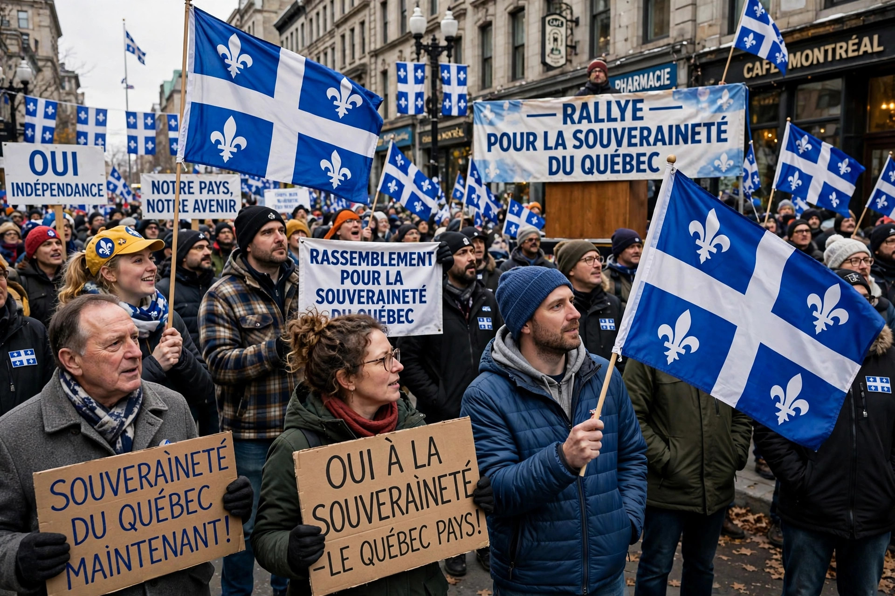

Quebec secessionism, or the Quebec sovereignty movement, is a political movement that advocates the independence of Quebec from Canada, making it a sovereign state. Sovereigntists propose varying arrangements, from full independence to sovereignty-association with a continued economic and monetary partnership with Canada.

Modern sovereigntism emerged during the Quiet Revolution of the 1960s. René Lévesque founded the Parti Québécois in 1968; it won power in 1976 and held a referendum in 1980, in which the sovereignty-association proposal was rejected 60–40. A second referendum in 1995, led by Jacques Parizeau and Lucien Bouchard, was defeated extremely narrowly, 50.58% No to 49.42% Yes.
In the 1998 Secession Reference, the Supreme Court of Canada held Quebec has no right to unilateral secession, but a clear majority on a clear question would oblige negotiations. Parliament responded with the Clarity Act (2000); Quebec's National Assembly countered with Bill 99 asserting Quebecers' right to decide.
Support for independence has generally polled between roughly 30% and 40% since 1995. Sovereigntist parties include the Parti Québécois at the provincial level and the Bloc Québécois federally.